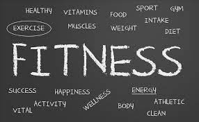

What It Means to Be Fit

According to the Physical Activity Guidelines for Americans set forth by the U.S. Department of Health and Human Services (HHS), there are five components of physical fitness:
- Cardiorespiratory Fitness Your VO2 max is a commonly used measure of this. It’s your body’s ability to uptake and utilize oxygen (which feeds all of your tissues), something that is directly related to your health and quality of life, says Abbie Smith-Ryan, PhD, professor and director of the Applied Physiology Laboratory at the University of North Carolina in Chapel Hill.
- Musculoskeletal Fitness This includes muscle strength, endurance, and power.
- Flexibility
- Balance This is your ability to stay on your feet and steady to avoid falls.
- Speed This is how quickly you can move.